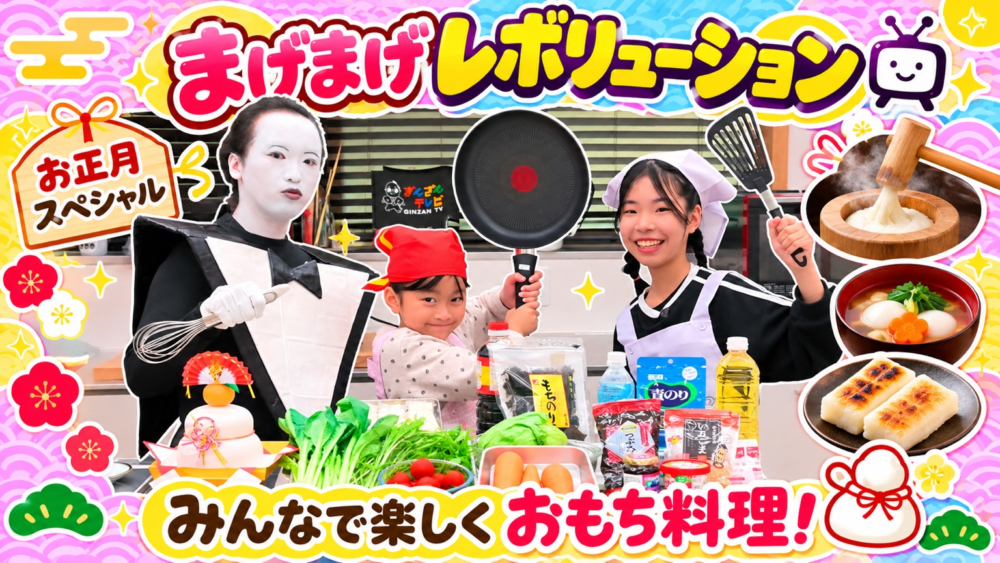
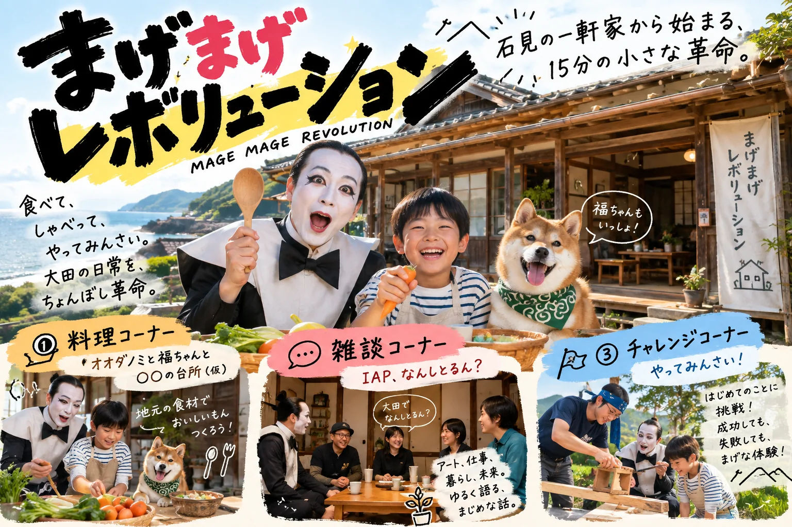

料理コーナー
地域の食材や家庭の味を囲んで、一緒につくる楽しさを分かち合う。出演者と福ちゃんが登場する企画を検討中。
LOCAL MEDIA / MAGEMAGE REVOLUTION
石見の一軒家から始まる、15分の小さな革命。
食べて、しゃべって、やってみんさい。
FILMING / 撮影レポート
、「まげまげレボリューション」の撮影を行いました。お正月スペシャル「みんなで楽しくおもち料理！」の番組画像をご紹介します。


※ 上の画像はAI生成による番組企画イメージです。画像内の人物・風景は実際の出演者や撮影現場ではなく、デザイン・番組構成は変更になる場合があります。
CONCEPT / 企画概要
暮らしのすぐそばにある、
おもしろい出来事を見つけにいく。
『まげまげレボリューション』は、IWAMI ARTS PROJECTが企画する地域発のローカル番組事業。石見の一軒家を拠点に、食と会話と挑戦を通じて、子どもから大人までさまざまな人が自然に出会える時間をめざします。1回約15分を予定しています。2027年1月からケーブルテレビなどで放送、YouTubeなどで配信を開始することが決定しました。
地域の食材や家庭の味を囲んで、一緒につくる楽しさを分かち合う。出演者と福ちゃんが登場する企画を検討中。
舞台、地域、仕事、暮らし、未来のこと。IAPメンバーとゲストが気負わず語り合う。
地域の人たちと、普段はしないことにも挑戦。成功も失敗もまるごと楽しみ、地元の魅力を見つける。
SPECIAL SYSTEM / まげまげ予算ゲージ
番組開始時点で、すでに予算が残り20％！？
『まげまげレボリューション』には、制作予算の残りを表す「まげまげ予算ゲージ」が登場します。
普通なら100％からスタートするところですが、この番組はなんと、最初から残り20％！ どうやら番組が始まる前に、予算のほとんどを使ってしまったようです。
そんなギリギリの状態にもかかわらず、出演者たちは豪華な料理を作ったり、無謀な企画に挑戦したり……。何かするたびに、わずかな予算がどんどん減っていきます。
予算がなくなると番組の演出にも異変が！？ ピンチを救ってくれるのは出演者たちの知恵と工夫。そして、番組を応援してくれるスポンサーかもしれません。
果たして、残り20％の予算で番組を最後まで続けられるのか！？ お金はない。でも、やりたいことは山ほどある。予算不足さえも笑いに変える、まげまげ流の挑戦をお楽しみください！
ゲージの変化にもご注目！
下の表示はゲージの変化例。番組は残り20％からスタートし、企画によって減ったり、思わぬ応援で回復したりするかも！？
※ ゲージの数値は番組を盛り上げるための演出上のもので、実際の制作費残高を示すものではありません。
2027年1月からケーブルテレビなどで放送、YouTubeなどで配信を開始することが決定しました。 放送・配信の具体的な日時・チャンネル等は、公式サイトのお知らせやSNSでご案内します。
最新のお知らせを見る ↗SPONSOR / SUPPORT THE PROGRAM
『まげまげレボリューション』では、番組を一緒に盛り上げてくださる企業・団体・個人のスポンサーを募集しています。地域の魅力を発信する取り組みを、ぜひ応援してください。
スポンサーのお名前や企業・団体名を番組内でご紹介します。
スポンサーの商品やサービスを番組内でご紹介するなどの特典をご用意しています。
※ ご紹介の内容や方法、スポンサー条件などは個別にご相談のうえ決定します。
スポンサーについて問い合わせる ↗